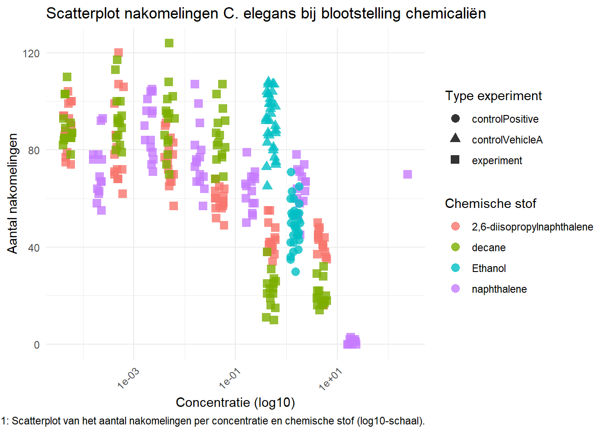

5 Repoductie van data analyse
In dit onderdeel werk ik een opdracht uit met als doel de analyse reproduceerbaar uit te werken in een Rmd file. De gebruikte data is aanwezig in ./data/
De data is afkomstig van het HU lectoraat Innovative Testing in Life Sciences & Chemistry. De data is verkregen door C. elegans bloot te stellen aan verschillende doses van verschillende chemicaliën. De volgende variabelen in de dataset zijn van belang voor de analyse:
RawData: het aantal nakomelingen dat is geteld. compName: de naam van het chemicalie waaraan de wormen zijn blootgesteld. compConcentration: de gebruikte concentratie van het chemicalie. expType: een variabele die aangeeft of de meting een experimentele conditie is, of een controle conditie (negatieve controle of vehicle controle).
Voer de onderstaande stappen uit in je analyse:
Lees de data in in R met het readxl package. Inspecteer de data. Is de data goed ingelezen? Kloppen de data types voor rawData, compName en compConcentration?
## ── Attaching core tidyverse packages ──────────── tidyverse 2.0.0 ──
## ✔ dplyr 1.1.4 ✔ readr 2.1.5
## ✔ forcats 1.0.0 ✔ stringr 1.5.1
## ✔ ggplot2 3.5.1 ✔ tibble 3.2.1
## ✔ lubridate 1.9.3 ✔ tidyr 1.3.1
## ✔ purrr 1.0.2
## ── Conflicts ────────────────────────────── tidyverse_conflicts() ──
## ✖ dplyr::filter() masks stats::filter()
## ✖ dplyr::lag() masks stats::lag()
## ℹ Use the conflicted package (<http://conflicted.r-lib.org/>) to force all conflicts to become errors## # A tibble: 6 × 34
## plateRow plateColumn vialNr dropCode expType expReplicate expName
## <lgl> <lgl> <dbl> <chr> <chr> <dbl> <chr>
## 1 NA NA 1 a experiment 3 CE.LIQ.FLOW.062
## 2 NA NA 1 b experiment 3 CE.LIQ.FLOW.062
## 3 NA NA 1 c experiment 3 CE.LIQ.FLOW.062
## 4 NA NA 1 d experiment 3 CE.LIQ.FLOW.062
## 5 NA NA 1 e experiment 3 CE.LIQ.FLOW.062
## 6 NA NA 2 a experiment 3 CE.LIQ.FLOW.062
## # ℹ 27 more variables: expDate <dttm>, expResearcher <chr>, expTime <dbl>,
## # expUnit <chr>, expVolumeCounted <dbl>, RawData <dbl>, compCASRN <chr>,
## # compName <chr>, compConcentration <chr>, compUnit <chr>,
## # compDelivery <chr>, compVehicle <chr>, elegansStrain <chr>,
## # elegansInput <dbl>, bacterialStrain <chr>, bacterialTreatment <chr>,
## # bacterialOD600 <dbl>, bacterialConcX <dbl>, bacterialVolume <dbl>,
## # bacterialVolUnit <chr>, incubationVial <chr>, incubationVolume <dbl>, …## tibble [360 × 4] (S3: tbl_df/tbl/data.frame)
## $ RawData : num [1:360] 44 37 45 47 41 35 41 36 40 38 ...
## $ compName : chr [1:360] "2,6-diisopropylnaphthalene" "2,6-diisopropylnaphthalene" "2,6-diisopropylnaphthalene" "2,6-diisopropylnaphthalene" ...
## $ compConcentration: chr [1:360] "4.99" "4.99" "4.99" "4.99" ...
## $ expType : chr [1:360] "experiment" "experiment" "experiment" "experiment" ...In de str is het volgende te zien: - RawData is numeric en zou het aantal nakomelingen moeten bevatten. Dit hoort integrals te zijn (het gaat om frequenties). - compName is character en zou de naam van de chemicaliën moeten bevatten. Hier factoren van maken is handig voor plots. - compConcentration is character en zou de concentratie van de chemicaliën meoten bevatten. Dit hoort numeric te zijn. - expType is character en zou het experiment type moeten bevatten neg of vehicle. Ook hier is het handig om hier factoren van te maken voor plots.
data$RawData <- as.integer(data$RawData)
data$compName <- as.factor(data$compName)
data$compConcentration <- parse_number(data$compConcentration)
data$expType <- as.factor(data$expType)
#controle met str
data %>% select(RawData, compName, compConcentration, expType) %>% str()## tibble [360 × 4] (S3: tbl_df/tbl/data.frame)
## $ RawData : int [1:360] 44 37 45 47 41 35 41 36 40 38 ...
## $ compName : Factor w/ 5 levels "2,6-diisopropylnaphthalene",..: 1 1 1 1 1 1 1 1 1 1 ...
## $ compConcentration: num [1:360] 4.99 4.99 4.99 4.99 4.99 4.99 4.99 4.99 4.99 4.99 ...
## $ expType : Factor w/ 4 levels "controlNegative",..: 4 4 4 4 4 4 4 4 4 4 ...## [1] "controlNegative" "controlPositive" "controlVehicleA" "experiment"## [1] "2,6-diisopropylnaphthalene" "decane"
## [3] "Ethanol" "naphthalene"
## [5] "S-medium"Maak een scatter plot voor de verschillende chemicaliën en concentraties:
Geef de compConcentration weer op de x-as. Zorg ervoor dat de labels op de x-as leesbaar zijn! Geef de RawData weer op de y-as. Visualiseer de verschillende chemicaliën met verschillende kleuren. Gebruik verschillende symbolen (shape =) voor de expType variabele. Controleer of de volgorde op de x-as klopt. Pas zonodig het data type van compConcentration aan. Gebruik een log10-transformatie om de x-variabele beter weer te geven. Voeg jitter aan de punten toe om te voorkomen dat punten overlappen.
library(ggplot2)
library(dplyr)
#data filter voor de missing values en concetratie 0 of lager (log10 schaal kan niet)
data_filtered <- data %>%
filter(
!is.na(RawData),
!is.na(compConcentration),
compConcentration > 0)
#Scatterplot
ggplot(data_filtered, aes(x = compConcentration, y = RawData, color = compName, shape = expType)) +
geom_jitter(width = 0.1, height = 0, size = 3, alpha = 0.8) + #jitter in x richting
scale_x_log10() + # log10 transformatie van x-as
labs(x = "Concentratie (log10)",
y = "Aantal nakomelingen",
color = "Chemische stof",
shape = "Type experiment",
title = "Scatterplot nakomelingen C. elegans bij blootstelling chemicaliën",
caption = "Figuur 1: Scatterplot van het aantal nakomelingen per concentratie en chemische stof (log10-schaal).") +
theme_minimal() +
theme(axis.text.x = element_text(angle = 45, hjust = 1))